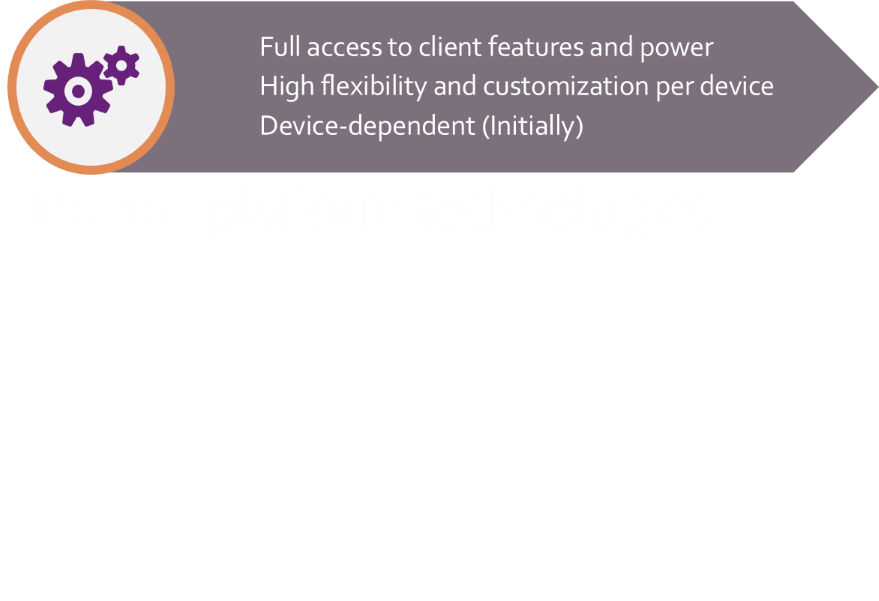
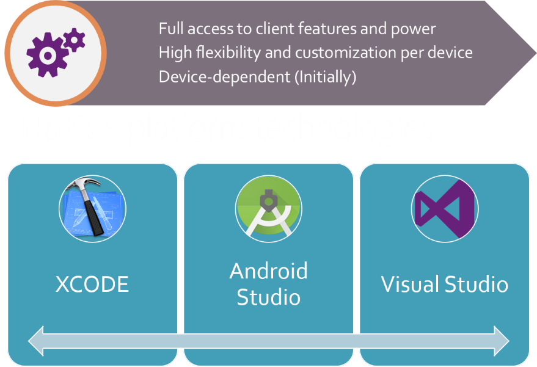
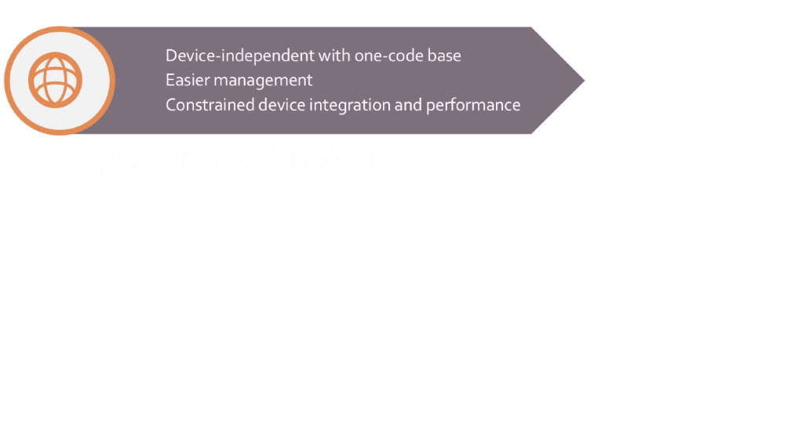
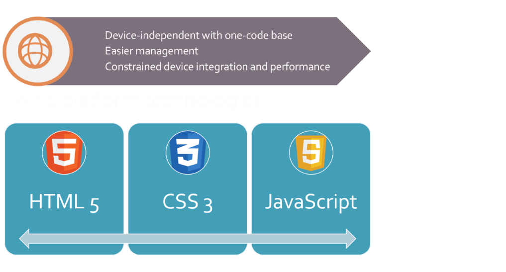
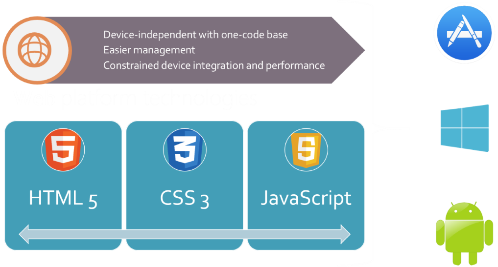

BUILDING CROSS-PLATFORM MOBILE APPS WITH IONIC 2
Justin James
Web Developer And Speaker
- Phoenix, Az, USA
- @digitaldrummerj
- digitaldrummerj
- digitaldrummerj.me
I wanted to build a mobile app too!
Traditional Strategy
Traditional Strategy
2014
Hybrid Strategy
Hybrid Strategy
Hybrid Strategy
Apache Cordova
- Open Source Middleware
- Bundles Web Code Into A Mobile Application
- Gives API to Access Device
Mark Zuckerberg. September, 2012 via venturebeat.com"The biggest mistake we’ve made as a company is betting on HTML 5 over native"
It’s not 2007 anymore
| Year | Device | Processor | Ram |
| 2007 | iPhone 1 | 620 MHz | 128 MB |
| 2010 | iPhone 4 | 1 GHz |
512 MB |
| 2014 | iPhone 6 | 1.4 GHz dual-core | 1 GB |
| 2015 | iPhone 6s | 1.8 GHz dual-core | 2 GB |
Before we jump into Ionic v2 ...
Ionic V1!
Validated the hybrid approach
Focused on mobile apps first
Sass for easy customization
Angular for code structure
Empowered Developers Everywhere
Web Developers could now
participate in making apps!
The Stats
Top 40 most popular OSS project
(23,000+ stars on GitHub)
Over 1.5 million apps created
Ionic apps top app store charts
But
Built during iOS 6 / Android 2.3 - 4.3
A lot's changed since its release
A lot's changed
ES2015/TypeScript!
Better/Faster devices!
Widely Available Web APIs!
Improved Browser Engines!

Ionic 2: Built for tomorrows web
v2 Goals
Simplicity
Platform Continuity
Navigation
Device Access
Tooling
Simplicity
Make it easy to understand HTML
V1 Buttons
<a class="button button-positive"></a>
<a class="button button-outlined button-balanced"></a>
<a class="button button-clear button-dark"></a>
<a class="button button-assertive button-icon ion-close"></a>
Classes can get
complex and cluttered
Move to properties instead
Easier to understand
Less markup
V2 Buttons
<button></button>
<button primary></button>
<button outlined secondary></button>
<button clear dark></button>
Icons
<ion-icon name="ionic"></ion-icon>
<ion-icon name="logo-angular"></ion-icon>
<ion-icon name="heart"></ion-icon>
<ion-icon name="ionitron"></ion-icon>
Properties and CSS elements
Less clutter, easier to read, and customize
Doesn't change how you write your styles
Platform Continuity
iOS, Android, Windows10
One code base
Same markup and classes
Fully customized interactions

Just makes it look right with zero coding
V2 Components
View DemosAll highly configurable
config: {
backButtonText: 'Go Back',
iconMode: 'ios',
modalEnter: 'modal-slide-in',
modalLeave: 'modal-slide-out',
tabbarPlacement: 'bottom',
pageTransition: 'ios',
} Navigation
More robust and powerful
V1's Routing
.config(function($stateProvider){
$stateProvider
.state('firstpage', {
url:'/firstpage',
templateUrl: 'firstpage.html'
})
.state('secondpage', {
url:'/secondpage',
templateUrl: 'secondpage.html'
})
});UI-Router
Doesn't Give Us flexibility
Navigation Constrained to URLs
No Flexibility to Control User Experience
Developers NEED to be in control
Push/Pop
import {SecondPage} from './second-page';
export class FirstPage {
constructor(public nav: NavController) {};
pushState() {
this.nav.push(SecondPage);
}
}
Full Control
Push pages onto the nav stack
Pop pages off the nav stack
Create app history from nothing
Update the URL as an option
Device Access
Goodbye ngCordova!
Hello, Ionic Native
ngCordova worked but...
API wasn't consistent
Didn't provide promises or play with ES6
Tied to Angular
Ionic Native
Framework Agnostic
Consistent API
Easier to Use
Plays nice with Typescript & ES6
Tooling for everyone
Building apps with new standards
JavaScript has changed
ES6 brings many new features
Typescript builds on top of that
Ionic 2 and Angular 2 built using TypeScript
But....this introduces complexity
Can't avoid a build process anymore
Transpiler & Module Loader
Tooling galore
BUNDLERS
Rollup, Webpack, Browserify, System.js
MODULES
AMD, UMD, CommonJS, System.js, ES6
Confusing to know the tool differences
and where to even start
Ionic CLI
Focus on writing your app
Build system handles everything else!
It Just Works
Ionic Tools
-
How it all comes together
- Your App
- Ionic
- Angular
- WebView (Cordova)
- Cordova Plugins
- Native App
Demo
https://github.com/digitaldrummerj/ionic2-master-detail-demo
Want to give it a try?
ionic.io/2
Installing Ionic
$ npm install -g gulp cordova ionic
! BUT NOT SO FAST
Android Software
|
|
|
|
Apple Software
- OSx Only
- Xcode
- Xcode Command Line Tools
- iOS Simulator
- Safari
- Apple Developer Accounts
Step-by-Step Guides
digitaldrummerj.me/Ionic-Setup-Windows/digitaldrummerj.me/ionic-setup-osx/
Create Project
ionic start myApp [blank/tabs/sideMenu] --v2Add Page
ionic g page firstPageTest In Web Browser
ionic serve --labAdd Platform
ionic platform add [android/ios/windows]Test On Device or Emulator
ionic [run/emulate] [android/ios/windows]Ionic Resources
- Docs - ionicframework.com/docs/v2
- Slack - ionicworldwide.herokuapp.com
- Meetups – blog.ionic.io/ionic-worldwide
Ionic Blogs

Great Book
for Learning
Ionic v2
Final Message
Ionic 2 is really pushing what
we can do with the web
The future is looking great for web and web technologies

Thank you!
</html>
@digitaldrummerjdigitaldrummerj.me/speaking/#ionic